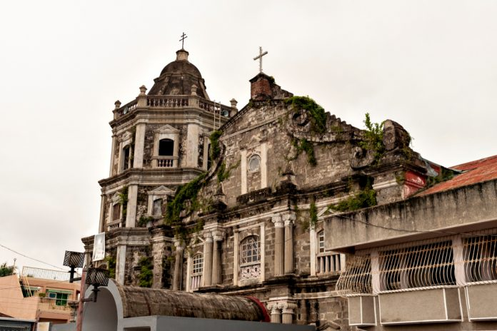
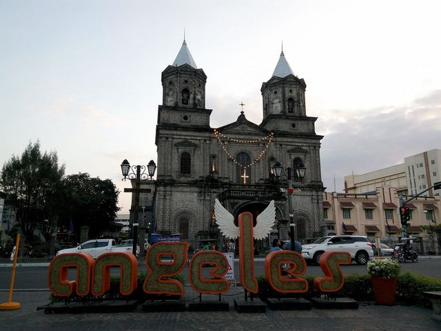

The Patron Church of Angeles City
Angeles City, Pampanga
The Minor Basilica of the Holy Rosary (known locally as the Holy Rosary Parish or "Angeles Church") is the patron church of Angeles City. Originally constructed in 1877, it has been lovingly restored and expanded over the centuries.
The church's striking white Baroque facade is a landmark visible from across Angeles City. Inside, the interior is adorned with intricate wood carvings, ornate altars, and religious artworks that reflect the deep Catholic faith of Kapampangans.
The church was elevated to the status of Minor Basilica by the Vatican, one of only a few churches in the Philippines to hold this honor.
